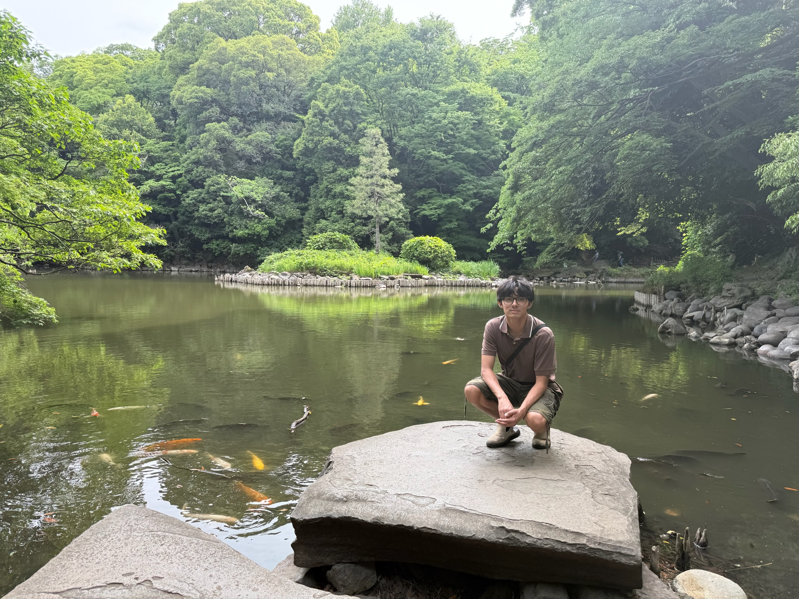

Gabriel Roca
I am a PhD student in mathematics at the University of Colorado Boulder. I received my Mathematics B.S. at the University of Central Florida, where I was advised by Dr. Michael Reid and Dr. Wissam Ghantous.

Research Interests
- I am interested in computational number theory and geometry. I have previously worked on some group theory problems.
Publications, Preprints, and Projects
-
Classification of the Prime Graphs of Sz(8)-, Sz(32)-, and PSL(2,32)-Solvable Groups
With Dr. Thomas Keller, Zachary Martin, Alexa Renner, and Eric Yu, Journal of Group Theory, (2026). DOI -
Criteria for Classifying Prime Graphs of PSL(2, q)-Solvable Groups
With With Dr. Thomas Keller, Zachary Martin, Alexa Renner, and Eric Yu, (2024). arXiv -
Prime Factorization and Unit Calculations of Quadratic Integer Rings
Advisors: Dr. Michael Reid and Dr. Wissam Ghantous. Honors Undergraduate Thesis
Teaching and Outreach
-
Bridge to Enter Advanced Mathematics (BEAM)
Part of my academic mission is to provide access to higher-level mathematics to underrepresented communities, which is what BEAM does. During Summer of 2025, I worked with BEAM in New York, where I was a TA for courses in Number Theory, Graph Theory, and "Solving Big Problems." This past Summer of 2026 I was a Junior Faculty in California, where I taught the courses "Propositional Logic" and "Polyominoes & Puzzles." -
University of Colorado Boulder
- Calculus 1 TA (Fall 2026)
-
University of Central Florida
- Calculus 1 TA (Fall 2025)
- Calculus 1 TA (Spring 2026)
- Led Putnam Exam Practices (2025-2026)
Outside math, I enjoy music, soccer (Barcelona), and languages!